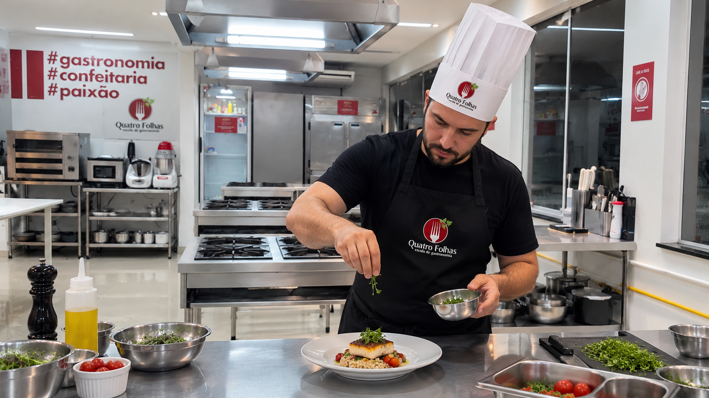

Curso rapido · Cozinha
Formato direto e pratico
Ganhe autonomia na cozinha com uma experiencia objetiva e profissional.
Chef Express e para quem quer aprender fazendo. Em poucas aulas, voce pratica fundamentos, tecnicas essenciais e preparos aplicaveis para cozinhar com mais seguranca.
Curso
objetivo Aulas
praticas
objetivo Aulas
praticas
O que voce encontra
Cozinha escola equipada
Orientacao de chef
Fundamentos de cozinha
Atendimento assistido
FormatoObjetivo
FocoFundamentos
TurmaSob consulta

Chef Express
Pratico e direto
Fundamentos, organizacao e preparos aplicaveis.
Aprendizado objetivoUm formato concentrado para ganhar seguranca sem entrar em uma formacao longa.
FundamentosOrganizacao, cortes, bases culinarias e tecnicas essenciais para evoluir.
Pratica realA experiencia acontece em cozinha escola equipada, com orientacao profissional.
AtendimentoA equipe confirma disponibilidade e orienta os proximos passos pelo WhatsApp.
Resultado esperado
Mais confianca para cozinhar com tecnica.
O Chef Express foi pensado para quem quer sair do basico sem complicar: aprender processos, ganhar repertorio e cozinhar com mais clareza.
Quer saber se esse formato combina com o seu momento?
Conversar com consultorConteudo do curso
Fundamentos praticos para usar no dia a dia
Uma jornada direta para aprender organizacao, tecnica e preparos que aumentam sua seguranca na cozinha.
Organizacao
Preparo da bancada, separacao de ingredientes e fluxo de trabalho.
Cortes
Uso de faca, padronizacao e seguranca nos cortes essenciais.
Bases culinarias
Fundamentos para entender preparos e cozinhar com mais criterio.
Cozimentos
Tecnicas de calor, ponto, textura e controle do preparo.
Receitas aplicaveis
Preparo de receitas para repetir com mais seguranca depois da aula.
Finalizacao
Montagem, apresentacao e cuidado visual do prato.
Autonomia
Decisoes simples para adaptar preparos e ganhar confianca.
Proximo passo
Orientacao para continuar evoluindo em cursos, aulas ou pratica pessoal.
Quer receber detalhes sobre agenda, formato e matricula?
Conversar com a escolaPor que fazer
Um curso curto, mas com experiencia de escola profissional.
Aprender em uma cozinha estruturada ajuda voce a entender processo, ritmo e tecnica com orientacao proxima.

Ambiente profissional
Pratique em uma cozinha escola preparada para aprender
Bancadas, utensilios e rotina de aula ajudam voce a ganhar clareza e seguranca durante os preparos.
Um formato para aprender sem excesso de teoria
O foco esta em fundamentos aplicaveis e orientacao pratica para evoluir de forma objetiva.
Proximos passos com a equipe
A escola confirma turma, disponibilidade e orientacoes de matricula pelo WhatsApp informado.
Mais seguranca para cozinhar depois da aula
Voce aprende a organizar, executar e reconhecer pontos importantes do preparo.
Agenda
Consulte a proxima turma
A disponibilidade do Chef Express varia conforme a agenda da escola. Nossa equipe confirma datas, horarios e proximos passos.
Chef Express
Formato pratico
Curso direto para ganhar fundamentos e autonomia na cozinha.
Pre-matricula assistida
WhatsApp
Informe seus dados para receber orientacao da equipe Quatro Folhas.
Duvidas frequentes
O que voce precisa saber
Se ainda restar alguma duvida, envie seus dados ou fale diretamente com nossa equipe pelo WhatsApp.
Preciso ter experiencia para comecar?
Nao. O Chef Express trabalha fundamentos e tecnicas essenciais para quem quer ganhar mais seguranca na cozinha.
As aulas sao praticas?
Sim. A proposta e aprender fazendo, com orientacao em cozinha escola equipada.
Quando abre a proxima turma?
A disponibilidade varia conforme a agenda. A equipe confirma datas e horarios pelo WhatsApp.
O curso serve para hobby?
Sim. O formato e indicado para quem quer cozinhar melhor em casa, ganhar repertorio e entender fundamentos.
Quer confirmar agenda e disponibilidade?
Conversar com consultorContato com a escola
Consulte a proxima turma
Preencha seus dados para que nossa equipe confirme disponibilidade, explique o formato e envie os proximos passos pelo WhatsApp.
Atendimento individual com a equipe Quatro Folhas.
Orientacoes sobre agenda, formato e matricula.
Contato pelo WhatsApp informado no cadastro.
Solicitar contato da equipe
Informe seus dados para consultar o Chef Express.